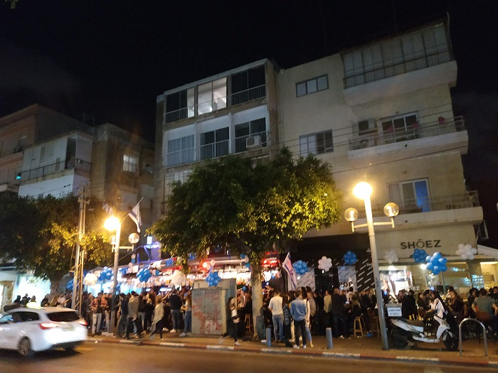
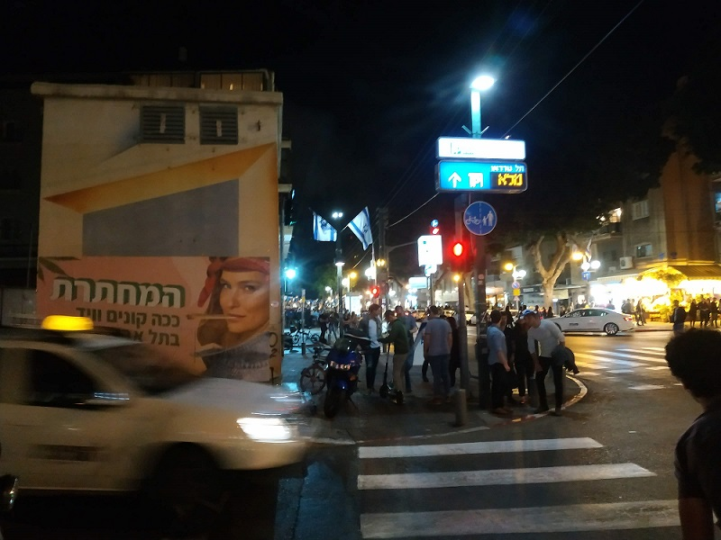
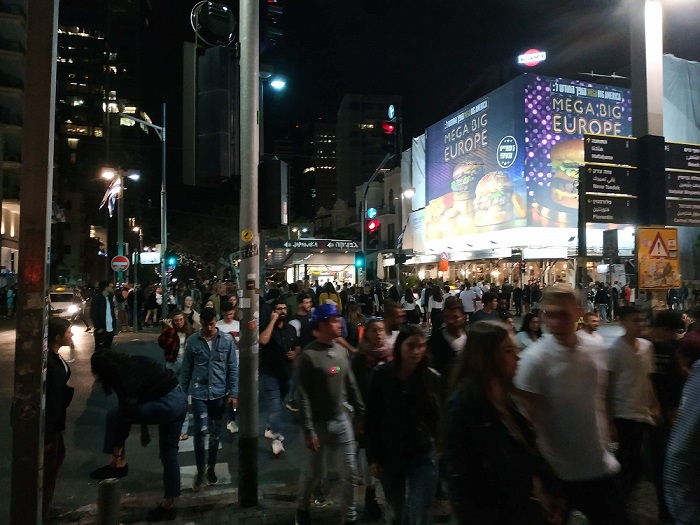

We decided to celebrate a New Year's night on the streat, in front of the sea, looking at fireworks. But there was one problem - there were no people near a waterfront and all looked like there weren't goint to be any fireworks.
We went in search of people, all of them were in the city center. There were hundrets of people, thousands. It was fantastic. So overcrowded, but safe and cosy. So noisy, but fun and interesting. Everything started from huge amount of people in each cafe, but soon they were standing on parts of roads. Cars slowly and calm drived round them. Everybody were happy.



It was impossible to stay in a cafe or bar, so we just walking. People sang songs and wished happy New Year. We felt how much local people loved their country and were proud of it. Moreovere, we didn't see any completely drank people or something negative. That night brought to us so many emotions and memories.
Summaries:
1 – It was the first country where New Year don't celebrate near waterfront
2 – It's cool when peope are proud of their contry
3 – It you want calm, better not go out at a day of Jewish New Year